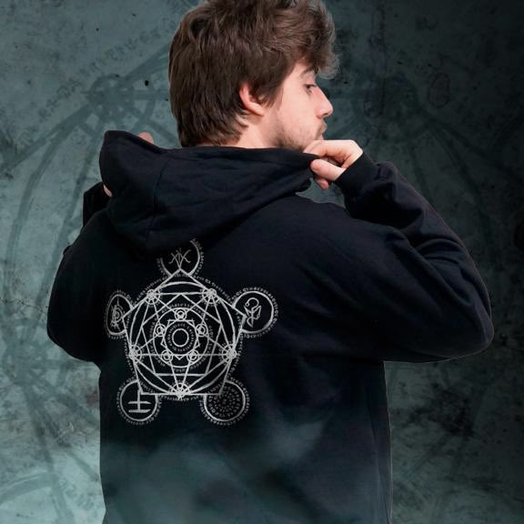
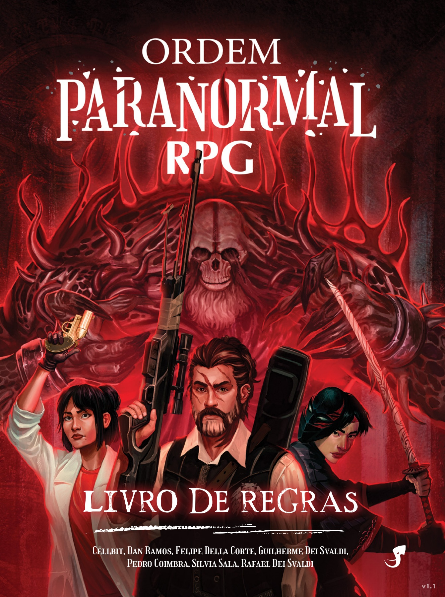
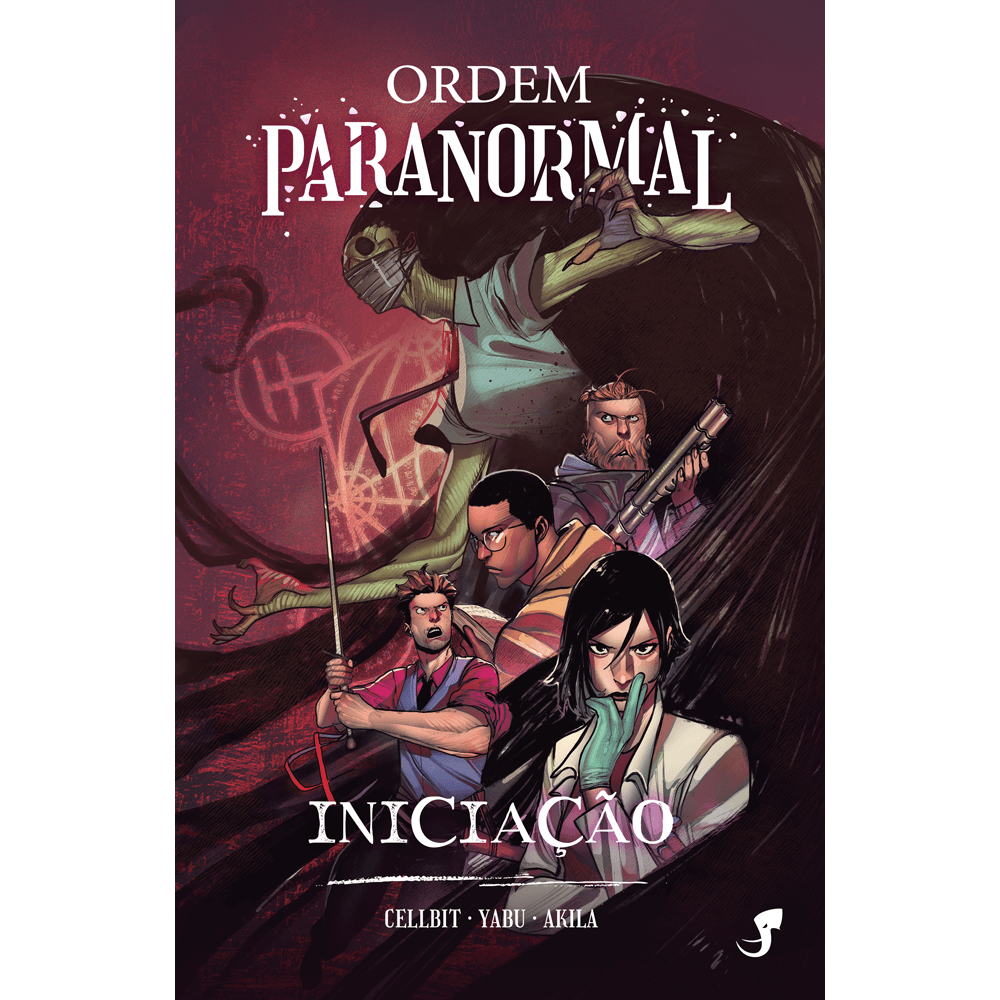
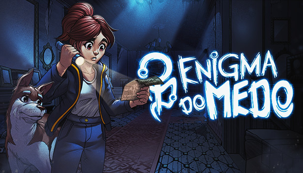

Esse site foi feito com o intuito de apresentar algumas curiosidades e informar sobre o RPG do Cellbit.
Todos os direitos reservados aos criadores.
Todo o conteúdo foi tirado da Ordem Paranormal Wiki
"A Lolja é um projeto que acredita que moda não é só roupa. É uma forma de se comunicar e transparecer sua personalidade"
Responsável pelas coleções de diversos youtubers e streamers, a Lolja é famosa por criar coleções exclusivas para o público, com a temática definida pelo influenciador.
Todas as temporadas do RPG têm roupas temáticas, como moletons, blusões, camisetas e até mesmo quadros para por em toda sua casa.

Lolja Ordem Paranormal
"O paranormal não vem para o nosso mundo de maneira fácil"
O livro de regras oficial para o RPG de mesa de Ordem Paranormal, criado pelo idealizador do cenário, Cellbit, em colaboração com Felipe Della Corte, Pedro Coimbra (Mestre Pedrok) e Silvia Sala.
O conteúdo é desenvolvido em parceria com a editora Jambô.

Livro de Regras
"Perigosos ocultistas tentam enfraquecer a fina Membrana que nos separa de loucuras e terrores indescritíveis"
Também em parceria com a editora Jambo, Cellbit, juntamente de Fábio Yabu, Akila, Caio Pegado, Renan Lino e Davi Pinheiro, nos trás a primeira temporada de Ordem Paranormal em forma de HQ, nos contantomelhor o início de tudo.

Ordem Paranormal Iniciação
Enigma do Medo é um futuro jogo de exploração, enigmas e sobrevivência com uma narrativa profunda e envolvente no universo de RPG criado por Cellbit que está sendo desenvolvido em parceria com a Dumativa e foi financiado por um projeto no Catarse.
Ambientado no universo de Ordem Paranormal, o jogo contará com personagens e criaturas já conhecidos além de novos que serão trazidos pela obra.

Enigma do Medo Catarse
Enigma do Medo Dumativa
Enigma do Medo Nuuvem
Enigma do Medo Steam